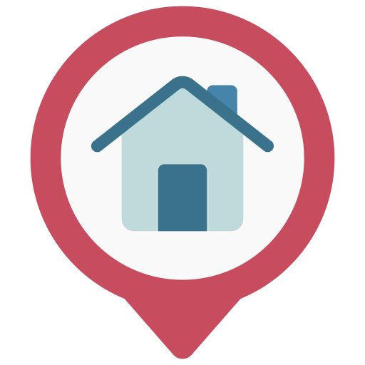

Úradný jazyk:
Ukrajinčina

Kapitál:
Kyjev

Získanie nezávislosti:
24 augusta 1991
Ľudí:
47 732 079

Mena:
Hrivna (UAH)
Časové pásmo::
GMT+2 (UTC+2)
Úradný jazyk:
Ukrajinčina
Kapitál:
Kyjev
Získanie nezávislosti:
24 augusta 1991
Ľudí:
47 732 079
Mena:
Hrivna (UAH)
Časové pásmo::
GMT+2 (UTC+2)
| Poloha | Stredná a Východná Európa, juhovýchodná časť Východoeurópskej nížiny, medzi 44”20′ a 52”20′ severnej zemepisnej šírky a 22”5′ a 41”15′ východnej zemepisnej dĺžky. |
|---|---|
| Rozloha | 603 700 km2 |
| Podnebie | prevažne mierne kontinentálne. |
| Priemerná zimná teplota | Od -8° do -12° C (od +17,6° F do +3° F). V južných oblastiach sa zimná teplota pohybuje okolo 0°C (+32°F). |
| Priemerná letná teplota | Od + 18 ° C do + 25 ° C (od + 64,4 ° F do + 77 ° F), hoci maximálna teplota môže byť nad + 35 ° C (+ 95 ° F). |
| Najlepší čas na návštevu Ukrajiny | leto, neskorá jar a začiatok jesene. |
| Hlavná internetová doména | ua |
| Medzinárodná telefónna predvoľba | 380 |

Často sa hovorí, že Ukrajina sa nachádza medzi východom a západom. Ukrajinská kultúra je skutočne jasnou kombináciou kultúr rôznych národov, ktoré žili a žijú na území Ukrajiny. To je to, čo ho robí tak zaujímavým.
Oficiálna stránka Ukraine vám povie o modernom ukrajinskom divadle, architektúre, fotografii, literatúre, hudbe, módnych trendoch v odievaní, vizuálnom umení, kinematografii a grafickom dizajne. Na stránke nájdete informácie o pripravovaných kultúrnych a športových podujatiach, festivaloch, ako aj zoznam múzeí a galérií, ktoré sa oplatí navštíviť. Ukrajina má svetu čo ukázať.
Jednou z najrozmanitejších a najinovatívnejších oblastí ukrajinskej kultúry je hudobný priemysel. Objavte ukrajinskú hudbu a jej rytmy na medzinárodnom show-festivale Waves Vienna. V roku 2020 sa na festivale predstavilo šesť ukrajinských skupín. Vypočujme si jazz aj na Am I Jazz Festivale afroamerickej a improvizačnej hudby. Tento každoročný festival poukazuje na kontrasty a paralely medzi novou akustickou a elektronickou hudbou.
Súčasní krymskí a ukrajinskí umelci vystúpili na online koncerte 'Svoi.Korinni' k Medzinárodnému dňu svetového domorodého obyvateľstva. Ak ste fanúšikom vážnej hudby, určite na vás zapôsobí spomienkový koncert venovaný Josephovi Rothovi, slávnemu novinárovi a prozaikovi. Koncert sa konal v jeho rodnom meste Brody (Ľvovská oblasť) a zišlo sa na ňom viac ako 200 umelcov z celého sveta.

Ukrajinská kuchyňa so svojimi rozmanitými chuťami a technikami varenia je dôležitou súčasťou kultúrneho dedičstva krajiny. Odráža osobitosti regiónov krajiny a kulinárske dedičstvo rôznych etnických a národnostných spoločenstiev Ukrajiny. Boršč (polievka z červenej repy) je najznámejšie ukrajinské jedlo. Každá ukrajinská rodina má svoj vlastný recept na boršč. Najbežnejší recept zahŕňa kapustu, mrkvu, cibuľu, zemiaky, paradajky a mäso, hoci boršč môže byť aj vegetariánsky. Okrem reštaurácií a kaviarní by ste mali navštíviť miestne trhy s ovocím, zeleninou, bylinkovými čajmi a domácimi syrmi.